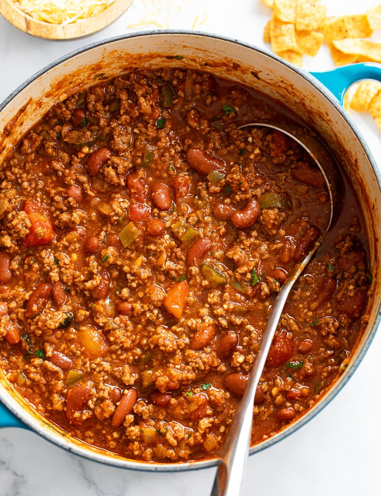

One-Pot Chili and Cheese

The absolute peak of meal-prep - downright addictive.
Ingredients
- 1 1/2 cups rice
- 1 package ground beef
- 1 large tin diced tomatoes
- 1 tin dark red kidney beans
- 1 tsp salt
- 2 tbsp chili powder
- 3 tbsp chipotle hot sauce
- medium cheddar cheese, shredded or chunked
Steps
- Drain kidney beans and tomatoes, reserving 1 1/2 cups liquid, adding water if necessary.
- Brown meat in a wok or large frying pan, adding salt and chili powder.
- Add liquid and 1 1/2 cups of rice, bring to boil for 10 minutes.
- Stir in kidney beans, tomatoes, and chipotle sauce, reduce heat to simmer.
- Simmer until chili is reduced and rice is plump. Serve in bowl and top with cheese.
Home